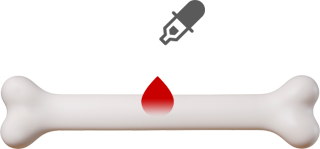

又稱合血驗親法，兩個人的血液放在一起，假如能融合在一起，就是有血緣關係
以現代科學分析，沒有科學根據
事實上，將兩個人的血液共同滴入同一容器，不久都會融合為一，不必一定要是骨肉至親。因為人類的A型血和B型血是能夠溶合在一起的，如果以所謂的「合血法」檢驗兩名分別是A及B血型的人，其血液雖能融合卻不一定有血緣關係，所以滴血認親是完全不可信的。
活人的血滴在死人的骨頭上，觀察是否滲入，若能滲入則表示有二者有血緣關係
按現代法醫學理論分析，缺乏科學依據
骨骼無論是露天保存，還是埋藏在泥土中，經過較長時間，一般情況下軟組織都會經過腐敗完全消失，而毛髮、指甲則會脫落，最後僅剩下白骨化的骨骼。白骨化了的骨骼，表層腐蝕乾枯，無論滴入任何人的血液都會滲入。若骨骼未乾枯，結構完整、表面還有軟組織時，滴入任何人的血液都不會發生滲入的現象。
倚靠外貌長像的對比來確定親子關係恐怕是最原始且不科學的方法
只是一種猜測、判斷，並不能作為親子鑑定的參考
在日常生活中，我們在遇到帶著小孩的父母時，經常會討論「小孩長得像爸爸還是像媽媽」。由於遺傳的原因，父子（女）、母子（女）、兄弟姐妹之間的五官、膚色等一般都會有某些相似的地方，但是遺傳變異、基因突變以及環境因素，使得子女與父母出現「不像」的情形是非常正常的。
另一方面，每個人對事物外觀的觀察其實充滿主觀因素，在大多數的情形下，我們說小孩與父母像或不像，是基於已經認定的親緣關係為依據而去做判斷，因此常常不同的人就有不同的看法，從這個角度說，像或不像就很難以個人觀察為標準。
過去有不少父母認為孩子長得不像自己，或周遭親朋好友覺得小孩跟自己不像而要求做親子鑑定，結果絕大多數鑑定出來都是自己的親骨肉，所以靠外貌來判定並不客觀。